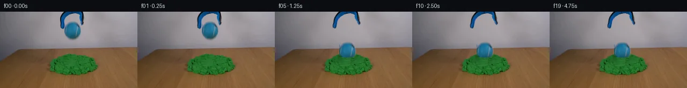
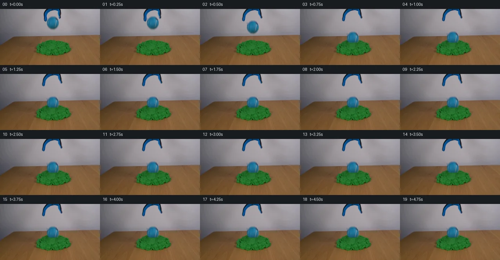
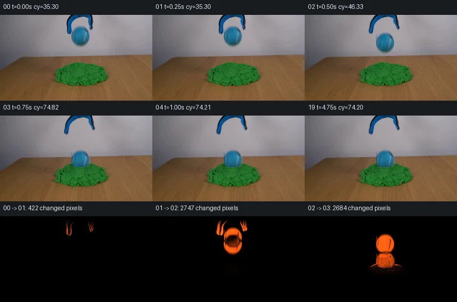

V0 · 初版 · 最终提交
![]()
Observable Generation Trace
把最终像素视频、Harness 冻结的每轮候选、真实工具事件和 Agent 自述放在同一页。可观测证据与模型自述分开标记，避免把“模型说它检查过”误当成真实工具调用。
![首帧]()
Static locked-off single-shot with fixed frame throughout filmed with constant framerate in real-time. The scene shows a realistic scientific demonstration. The scene only contains the described setup and actions. The green kinetic sand is located on a wooden table, and the blue-black grabber tool is suspended over it. The blue-black grabber tool releases the blue tennis ball above a pile of green kinetic sand.
首帧显示在左侧播放器初始画面。Track 权限、隔离和 tensor 一致性来自 run manifest，而不是 METHOD.md。
默认勾选初版和最终版；可选其他版本一起同步播放。仅检查图更新的连续重复快照已合并，回退旧视频仍保留为一次修订。
Observable events
来源：events.jsonl + run manifest
此 Track 禁止读取输出图片。逐轮预览由外部 Harness 自动冻结，只用于事后审计，生成 Agent 当时看不到这些页面。
Frozen candidates
每张图来自该 round 的真实 00 / 01 / 05 / 10 / 19 帧

pixels 8ffc98406feffdbb · code 7759bc296ef55618
--- previous/generate.py
+++ current/generate.py
@@ -0,0 +1,375 @@
+"""PixelWorld-Text continuation using only local source-pixel operations.
+
+No image viewer, network, external model, renderer, or reference is used.
+Run: python generate.py
+"""
+from pathlib import Path
+import hashlib
+import json
+
+import numpy as np
+from PIL import Image, ImageDraw
+from scipy.ndimage import gaussian_filter, map_coordinates, binary_dilation
+
+from artifact_io import save
+
+
+ROOT = Path(__file__).resolve().parent
+TMP = ROOT / '.tmp'
+TMP.mkdir(exist_ok=True)
+SOURCE = np.asarray(Image.open(ROOT / 'first_frame.png').convert('RGB'))
+assert SOURCE.shape == (144, 256, 3)
+A = SOURCE.astype(np.float64)
+H, W = A.shape[:2]
+Y, X = np.mgrid[:H, :W].astype(float)
+CX, CY = 135.1, 35.3
+RX, RY = 15.3, 15.8
+GRAVITY = 4500.0
+RELEASE = 0.43
+SURFACE = 79.5
+CONTACT_CY = SURFACE - RY
+FLIGHT = np.sqrt(2 * (CONTACT_CY - CY) / GRAVITY)
+CONTACT_TIME = RELEASE + FLIGHT
+CONTACT_VELOCITY = GRAVITY * FLIGHT
+REST_DEPTH = 10.5
+DAMP_RATE = 21.0
+
+
+def smoothstep(lo, hi, value):
+ q = np.clip((value - lo) / (hi - lo), 0, 1)
+ return q * q * (3 - 2 * q)
+
+
+def sample(arr, sx, sy):
+ """Bilinear local resampling, outside the frame is transparent zero."""
+ coords = np.array([sy, sx])
+ if arr.ndim == 2:
+ return map_coordinates(arr, coords, order=1, mode='constant', cval=0,
+ prefilter=False)
+ return np.stack([map_coordinates(arr[..., c], coords, order=1,
+ mode='constant', cval=0, prefilter=False)
+ for c in range(arr.shape[-1])], axis=-1)
+
+
+def wall_estimate():
+ """Horizontal wall interpolation from undisturbed adjacent source pixels."""
+ wall = A.copy()
+ # At these x positions no tool or ball is present. Smoothing along y
+ # suppresses one-level quantization while retaining the measured lighting.
+ left = gaussian_filter(A[:62, 104:111].mean(axis=1), (0.7, 0))
+ right = gaussian_filter(A[:62, 157:162].mean(axis=1), (0.7, 0))
+ q = np.clip((np.arange(W) - 107) / (159 - 107), 0, 1)
+ for row in range(60):
+ wall[row] = left[row][None, :] * (1-q[:, None]) + right[row][None, :] * q[:, None]
+ # A small observed central wall curvature, below one RGB level.
+ wall[row] += (0.65 * np.sin(np.pi*q))[:, None]
+ return wall
+
+
+WALL = wall_estimate()
+
+
+def sphere_matte():
+ """Soft geometric sphere edge plus source-channel opacity constraints."""
+ scale = 4
+ sy, sx = np.mgrid[:H*scale, :W*scale].astype(float)
+ sy = (sy + .5) / scale - .5
+ sx = (sx + .5) / scale - .5
+ shape = (((sx-CX)/RX)**2 + ((sy-CY)/RY)**2 <= 1).astype(float)
+ shape = gaussian_filter(shape, (1.55*scale, .90*scale))
+ shape = shape.reshape(H, scale, W, scale).mean(axis=(1, 3))
+ radius = np.sqrt(((X-CX)/RX)**2 + ((Y-CY)/RY)**2)
+ domain = (radius < 1.31) & (Y >= 17) & (Y <= 55)
+ # These numeric bounds separate the lower cyan sphere from the blue jaws.
+ domain &= ~((Y < 33) & (X < 120))
+ domain &= ~((Y < 27) & (X > 149))
+ red_opacity = (WALL[..., 0] - A[..., 0]) / np.maximum(WALL[..., 0] - 15, 1)
+ lower = np.max((WALL - A) / np.maximum(WALL, 1), axis=2)
… diff truncated; 288 more lines …pixels 8ffc98406feffdbb · code d1332b9d730fda1e
--- previous/generate.py
+++ current/generate.py
@@ -4,8 +4,13 @@
Run: python generate.py
"""
from pathlib import Path
+import sys
+sys.dont_write_bytecode = True
+import base64
import hashlib
import json
+import re
+import shutil
import numpy as np
from PIL import Image, ImageDraw
@@ -310,6 +315,32 @@
png_results.append(True)
first_decoded = np.asarray(Image.open(ROOT/'frames'/'00.png'))
assert np.array_equal(first_decoded,SOURCE)
+ assert (ROOT/'frames'/'00.png').read_bytes() == (ROOT/'first_frame.png').read_bytes()
+ # Decode the self-contained player independently of the serializer.
+ html = (ROOT/'index.html').read_text()
+ embedded = json.loads(re.search(r'const DATA=(.*?);\nfunction unpack',
+ html, re.S).group(1))
+ unpack = lambda s: np.frombuffer(base64.b64decode(s), dtype='<u4')
+ player_frames = [unpack(embedded['first']).copy()]
+ for packet in embedded['deltas']:
+ decoded = unpack(packet)
+ next_frame = player_frames[-1].copy()
+ index = 0
+ while index < len(decoded):
+ start, count = map(int, decoded[index:index+2])
+ index += 2
+ assert 0 <= start < H*W and start+count <= H*W
+ next_frame[start:start+count] = decoded[index:index+count]
+ index += count
+ player_frames.append(next_frame)
+ assert len(player_frames) == 20 and '},250)' in html
+ for n, pixels in enumerate(player_frames):
+ assert np.array_equal(pixels.reshape(H,W), tensor[...,n])
+ required = ['OBSERVATION.md','generate.py','pixels.npz','inspection.png',
+ 'transition_check.png','index.html','METHOD.md']
+ required += [f'frames/{n:02d}.png' for n in range(20)]
+ assert all((ROOT/name).is_file() and (ROOT/name).stat().st_size > 0
+ for name in required)
# Fixed frame and untouched surroundings, independent of foreground details.
stationary = (X < 95) | (X > 179) | (Y > 109)
assert np.array_equal(frames[:,stationary], np.broadcast_to(SOURCE[stationary],
@@ -331,7 +362,10 @@
result = dict(source_sha256=hashlib.sha256((ROOT/'first_frame.png').read_bytes()).hexdigest(),
tensor_key='pixels',tensor_shape=list(tensor.shape),tensor_dtype=str(tensor.dtype),
tensor_packing='0xRRGGBB',fps=4,duration_s=5,frame_count=20,
- exact_first_frame=True,all_png_tensor_checks=all(png_results),
+ exact_first_frame=True,first_png_byte_identical=True,
+ all_png_tensor_checks=all(png_results),
+ embedded_player_all_frames_exact=True,player_interval_ms=250,
+ all_required_artifacts_exist=True,
stationary_pixels_per_frame=int(stationary.sum()),
stationary_region_exact=True,frames_08_through_19_identical=True,
source_layer_reconstruction_max_rgb_error=int(source_error.max()),
@@ -358,9 +392,9 @@
The sand response uses bilinear warping of the original green grains within a small elliptical neighborhood. An analytic local depression and outward displacement lift a modest rim. Multiplicative directional shading and a soft contact shadow provide depth while preserving the measured granular colors. A curved textured front edge is composited over the lowest portion of the ball to represent burial. Its small transient displacement relaxes; frames 08–19 are an exact stationary hold. This is a 2D pixel construction with an analytic contact approximation, not a full 3D or grain-by-grain simulation.
-`generate.py` deterministically creates the 20 RGB PNG frames at 256×144. Frame 00 is copied exactly from the input RGB array. `pixels.npz` contains `pixels`, a uint32 tensor with shape (144, 256, 20), packed as 0xRRGGBB. `artifact_io.py` is the supplied output-only serializer and HTML player helper. The self-contained `index.html` reconstructs all frames from embedded packed data and plays at 250 ms per frame for a five-second loop. `inspection.png` contains all 20 frames with sample-time labels. `transition_check.png` contains the release/contact frames and amplified RGB-difference maps; these sheets were generated but were not viewed with an image tool.
-
-Verification rereads every saved PNG, packs its RGB channels, and compares it exactly to its tensor slice. It checks the first frame against the source, exact unchanged distant pixels, airborne-before-contact ordering, final ball position, and the identical settled hold. Results and per-transition change bounds are recorded in `verification.json`. All review was numerical; no claim of visual review is made.
+`generate.py` deterministically creates the 20 RGB PNG frames at 256×144. Frame 00 is copied exactly from the input RGB array, and the saved `00.png` is also copied byte for byte from the input PNG. `pixels.npz` contains `pixels`, a uint32 tensor with shape (144, 256, 20), packed as 0xRRGGBB. `artifact_io.py` is the supplied output-only serializer and HTML player helper. The self-contained `index.html` reconstructs all frames from embedded packed data and plays at 250 ms per frame for a five-second loop. `inspection.png` contains all 20 frames with sample-time labels. `transition_check.png` contains the release/contact frames and amplified RGB-difference maps; these sheets were generated but were not viewed with an image tool.
+
+Verification rereads every saved PNG, packs its RGB channels, and compares it exactly to its tensor slice. It independently decodes all embedded player delta packets and checks each reconstructed frame against the tensor, as well as the 250 ms playback interval. It checks the first frame's pixels and file bytes against the source, exact unchanged distant pixels, airborne-before-contact ordering, final ball position, and the identical settled hold. Results and per-transition change bounds are recorded in `verification.json`. All review was numerical; no claim of visual review is made.
Reproduce with `python generate.py` from this workspace. Intermediate diagnostic arrays are confined to `.tmp/layers.npz`.
'''
@@ -370,6 +404,7 @@
if __name__ == '__main__':
frames, trace, coverage = make_frames()
save(frames, ROOT)
+ shutil.copyfile(ROOT/'first_frame.png', ROOT/'frames'/'00.png')
contact_sheets(frames, trace)
+ write_method()
verify(frames, trace, coverage)
- write_method()Final visual checks
Harness 保存的最终产物


Agent claims
以下文字由生成 Agent 撰写，不等同于工具证据
The only scene sources are first_frame.png and prompt.txt. The PNG was loaded with local Python/Pillow and inspected as numeric RGB arrays, coordinate samples, color thresholds, and connected-component statistics. No image Read/View tool, rendered-image inspection, external reference, model, engine, network, or subagent was used.
Frame time is n/4 seconds; each RGB frame is held for 0.25 seconds, giving a five-second clip. Release occurs at approximately 0.43 seconds, with contact around 0.54 seconds. A critically damped contact approximation gives a final ball center near y=74, about 11 pixels below the first contact center. The sand retains a small local depression and a front lip that covers the lowest portion of the ball.
| Frame | Sample time | Planned event |
|---|---|---|
| 00 | 0.00 s | Exact input PNG pixels; ball held over the undisturbed green mound. |
| 01 | 0.25 s | Small initial jaw opening; ball remains at its original position. |
| 02 | 0.50 s | Jaws open; released ball has fallen roughly 11 pixels and remains above the crest. |
| 03 | 0.75 s | Ball has contacted and indented the mound; local sand moves outward and its front lip occludes the ball bottom. |
| 04 | 1.00 s | Damped penetration approaches its resting value; cohesive sand edges begin to relax. |
| 05 | 1.25 s | Ball effectively at rest; slight local rim slumping continues. |
| 06 | 1.50 s | Remaining small sand displacement decays. |
| 07 | 1.75 s | Final slight settling of the retained indentation. |
| 08 | 2.00 s | Ball and sand settled; tool remains open above them. |
| 09 | 2.25 s | Static settled setup. |
| 10 | 2.50 s | Static settled setup. |
| 11 | 2.75 s | Static settled setup. |
| 12 | 3.00 s | Static settled setup. |
| 13 | 3.25 s | Static settled setup. |
| 14 | 3.50 s | Static settled setup. |
| 15 | 3.75 s | Static settled setup. |
| 16 | 4.00 s | Static settled setup. |
| 17 | 4.25 s | Static settled setup. |
| 18 | 4.50 s | Static settled setup. |
| 19 | 4.75 s | Final resting state, held through 5.00 seconds. |
Use local NumPy/SciPy/Pillow pixel operations: estimate the neutral wall behind the moving foreground from adjacent numeric samples, separate the source ball and tool using color and measured geometry, warp the jaws, translate the original ball texture according to gravity and damped contact, and deform a small patch of original green texture into a shaded crater lip. Keep all distant pixels fixed. Preserve source edge softness with alpha compositing. Generate a contact sheet, a transition sheet, a self-contained 4 fps HTML player, the packed uint32 tensor, and twenty PNGs. Verify tensor shape, exact frame 00, every PNG's RGB packing, stationary regions, contact timing, and final stability numerically. Any review claims will be limited to these numeric checks.
This is a local source-pixel animation using NumPy, SciPy, and Pillow. The only scene inputs were first_frame.png and prompt.txt. OBSERVATION.md was written before the generation code, following numeric RGB measurements. No network, other scene, reference, external mask, AI model, external engine, subagent, image Read/View tool, or rendered-image review was used.
The existing gray wall was interpolated between untouched source columns beside the foreground. The original blue tennis ball was separated from the blue-black tool with measured coordinates, hue differences, a soft ellipse, and RGB opacity constraints. Premultiplied source-pixel layers retain the ball's original shaded blue surface, pale curved seam, and soft edge. The lower jaws were spread with a small continuous local warp while their top attachment stayed fixed. Vacated foreground pixels were filled with the interpolated wall.
The ball was translated vertically without changing its diameter. Release is at 0.43 s. The free fall uses y=y0+g*t²/2 with g=4500 px/s², based on the measured image scale of a nominal tennis ball. Contact occurs at 0.5423 s. A critically damped spring approximation then dissipates the impact and approaches a 10.5-pixel penetration. It includes a brief small overshoot between samples. The final ball center is (135.1, 74.2). At 4 fps this physically short flight has one clear airborne sample at frame 02, followed by contact in frame 03.
The sand response uses bilinear warping of the original green grains within a small elliptical neighborhood. An analytic local depression and outward displacement lift a modest rim. Multiplicative directional shading and a soft contact shadow provide depth while preserving the measured granular colors. A curved textured front edge is composited over the lowest portion of the ball to represent burial. Its small transient displacement relaxes; frames 08–19 are an exact stationary hold. This is a 2D pixel construction with an analytic contact approximation, not a full 3D or grain-by-grain simulation.
generate.py deterministically creates the 20 RGB PNG frames at 256×144. Frame 00 is copied exactly from the input RGB array, and the saved 00.png is also copied byte for byte from the input PNG. pixels.npz contains pixels, a uint32 tensor with shape (144, 256, 20), packed as 0xRRGGBB. artifact_io.py is the supplied output-only serializer and HTML player helper. The self-contained index.html reconstructs all frames from embedded packed data and plays at 250 ms per frame for a five-second loop. inspection.png contains all 20 frames with sample-time labels. transition_check.png contains the release/contact frames and amplified RGB-difference maps; these sheets were generated but were not viewed with an image tool.
Verification rereads every saved PNG, packs its RGB channels, and compares it exactly to its tensor slice. It independently decodes all embedded player delta packets and checks each reconstructed frame against the tensor, as well as the 250 ms playback interval. It checks the first frame's pixels and file bytes against the source, exact unchanged distant pixels, airborne-before-contact ordering, final ball position, and the identical settled hold. Results and per-transition change bounds are recorded in verification.json. All review was numerical; no claim of visual review is made.
Reproduce with python generate.py from this workspace. Intermediate diagnostic arrays are confined to .tmp/layers.npz.